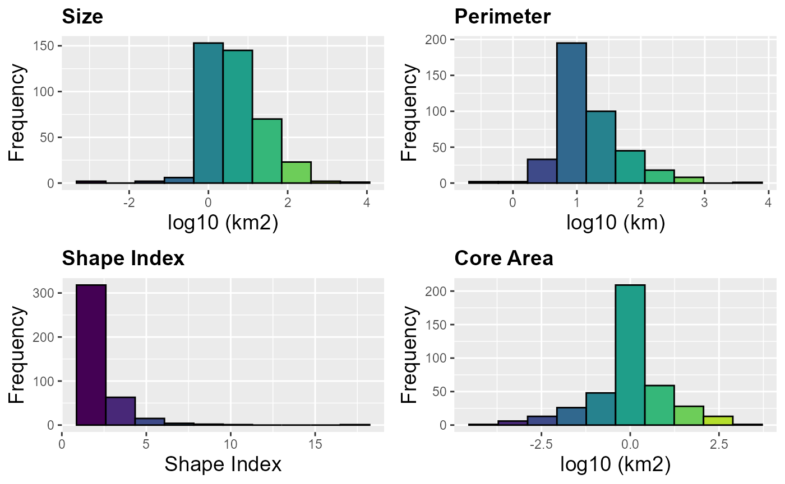
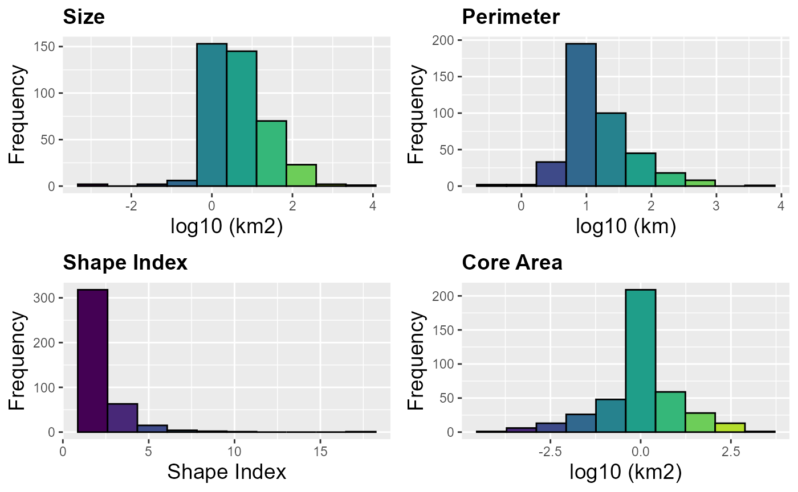

Fragmentation statistics
Source:vignettes/Fragmentation_statistics.Rmd
Fragmentation_statistics.RmdOverview
We explored the MK_Fragmentation() to estimate fragmentation statistics at the landscape and patch/node level.
Example database
In this example, the MK_Fragmentation() function was
applied to estimate the connectivity of 404 remnant habitat
nodes/patches, which were modeled to 40 non-volant mammal species of the
Trans-Mexican Volcanic System (TMVS) by Correa Ayram et al., (2017).
data("habitat_nodes", package = "Makurhini")
nrow(habitat_nodes) # Number of nodes
#> [1] 404
plot(st_geometry(habitat_nodes), col = "#00B050")
MK_Fragmentation()
To define the edge of the nodes we will use a distance of 500 m from the limit of the nodes (Haddad et al. 2015).
Fragmentation_test <- MK_Fragmentation(nodes = habitat_nodes, edge_distance = 500, plot = TRUE, min_node_area = 100, landscape_area = NULL, area_unit = "km2", perimeter_unit = "km") 

Exploring results
- The results are presented as a list, the first result is called “Summary landscape metrics (Viewer Panel)” and it has fragmentation statistics at landscape level.
names(Fragmentation_test)
#> [1] "Summary landscape metrics (Viewer Panel)"
#> [2] "Patch statistics shapefile"
Fragmentation_test$`Summary landscape metrics (Viewer Panel)`| Metric | Value |
|---|---|
| Patch area (km2) | 12735.7391 |
| Number of patches | 404.0000 |
| Size (mean) | 31.5241 |
| Patches < minimum patch area | 383.0000 |
| Patches < minimum patch area (%) | 28.8879 |
| Total edge | 17920.4740 |
| Edge density | 1.4071 |
| Patch density | 3.1722 |
| Total Core Area (km2) | 6315.9513 |
| Cority | 0.6040 |
| Shape Index (mean) | 2.2073 |
| FRAC (mean) | 8.4400 |
| MESH (km2) | 1443.4320 |
- The second output “Patch statistics shapefile” is a shapefile with patch level fragmentation statistics that can be saved using write_sf() from ‘sf’ package (https://cran.r-project.org/web/packages/sf/index.html).
head(Fragmentation_test[[2]])
#> Simple feature collection with 6 features and 9 fields
#> Geometry type: POLYGON
#> Dimension: XY
#> Bounding box: xmin: 40856.86 ymin: 2025032 xmax: 80825.67 ymax: 2066668
#> Projected CRS: NAD_1927_Albers
#> Id Area CA CAPercent Perimeter EdgePercent PARA ShapeIndex FRAC
#> 1 1 0.8584 0.000 0.0000 5.989 100.0000 0.1433 1.8235 -23.4460
#> 2 2 2.2022 0.000 0.0000 11.346 100.0000 0.1941 2.1568 6.1533
#> 3 3 110.1997 53.378 48.4375 184.969 51.5625 0.5958 4.9705 2.2203
#> 4 4 1.2100 0.000 0.0000 6.974 100.0000 0.1735 1.7885 20.3776
#> 5 5 1.8472 0.000 0.0000 14.452 100.0000 0.1278 2.9996 8.7044
#> 6 6 0.2631 0.000 0.0000 4.685 100.0000 0.0562 2.5766 -2.3133
#> geometry
#> 1 POLYGON ((54911.05 2035815,...
#> 2 POLYGON ((44591.28 2042209,...
#> 3 POLYGON ((46491.11 2042467,...
#> 4 POLYGON ((54944.49 2048163,...
#> 5 POLYGON ((80094.28 2064140,...
#> 6 POLYGON ((69205.24 2066394,...- To save the shapefile you can use the ‘write_sf()’ function from ‘sf’ package: write_sf(Fragmentacion_test[[2]], “…/folder/fragmentacion.shp”)
Viewing the results
We can visualize the static at the patch level using the default plot() function or other spatial information display packages like the ‘tmap’ package, for example:
- Core area (%):

- Edge (%)

- Perimeter-area ratio (PARA)

- Shape Index

- Fractal Dimension Index

Exploring other edge depths
We can make a loop where we explore different edge depths. In the following example, We will explore 10 edge depths (edge_distance argument): 100, 200, 300, 400, 500, 600, 700, 800, 900 and 1000 meters. We will apply the ‘MK_Fragmentation’ function using the previous distances and then, we will extract the core area percentage and edge percentage statistics. Finally, we will plot the average of the patch core area percentage and edge percentage (% core area + % edge = 100%).
#> Edge.distance Type Percentage
#> 1 100 Core Area 65.76120
#> 2 100 Edge 34.23880
#> 3 200 Core Area 41.98064
#> 4 200 Edge 58.01936
#> 5 300 Core Area 26.85321
#> 6 300 Edge 73.14679
The average core area percentage (average patch area that has the least possible edge effect) for all nodes decreases by more than 70% when considering an edge effect with an edge depth distance of 1 km.
| Edge depth distance (m) | CoreArea (%) |
|---|---|
| 100 | 83.5% |
| 500 | 34.14% |
| 1000 | 9.78% |
Reference:
INEGI. (2013). Conjunto de datos vectoriales de uso del suelo y vegetación, serie V (capa unión), escala 1:250,000. Instituto Nacional de Estadística y Geografía, Aguascalientes.
McGarigal, K., S. A. Cushman, M. C. Neel, and E. Ene. 2002. FRAGSTATS: Spatial Pattern Analysis Program for Categorical Maps. Computer software program produced by the authors at the University of Massachusetts, Amherst. Available at the following web site: www.umass.edu/landeco/research/fragstats/fragstats.html.
Haddad et al. (2015). Science Advances 1(2):e1500052. DOI: 10.1126/sciadv.1500052.